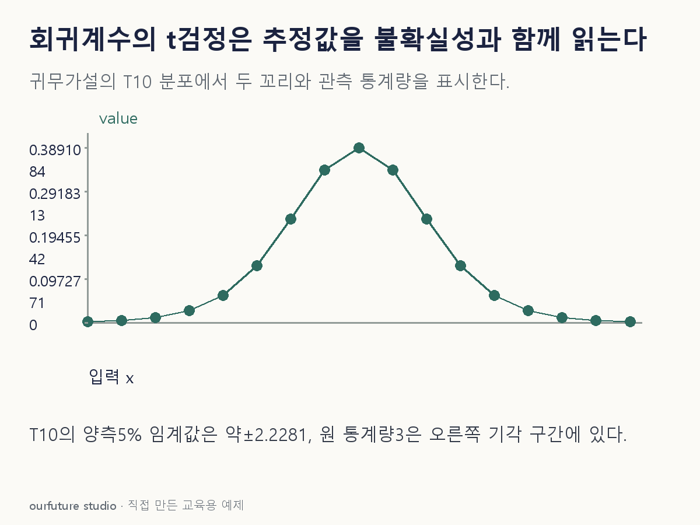

핵심 이론
여러 입력이 있는 선형회귀에서 한 계수 βj의 기본 양측검정은 H0:βj=0과 H1:βj≠0을 비교한다. t=(추정계수−귀무가설값)/표준오차이며, 추정값만 크고 작은지를 보는 검정이 아니다. 표준오차는 같은 단위의 추정 불확실성을 나타내므로 같은 계수0.6도 표준오차0.2일 때와0.4일 때의 통계량이 달라진다. 다른 입력을 모형에 둔 상태의 조건부 계수라는 점도 유지한다.
이 글의 정확한 t 기준 분포는 선형 평균구조·독립 정규오차·등분산·완전계수 설계행렬이라는 고전적 조건을 전제로 한다. 잔차 자유도가10이면 H0 아래 T10 분포에서 관측한 |t| 이상이 양쪽 꼬리에 나올 확률을 구한다. 이 값이 p값이며 βj가0일 확률이 아니다. 비정규·이분산 등 다른 조건에서 강건 표준오차나 다른 근사 추론을 쓴 결과까지 같은 방식으로 단정하지 않는다.
유의수준을 자료 확인 전에0.05로 정했다면 p<0.05에서 H0를 기각한다. 기각은 현재 모형과 가정 아래 계수가0과 다르다는 근거이고, 효과가 실무적으로 크다거나 입력을 강제로 바꾸면 결과가 그만큼 변한다는 인과결론은 아니다. 기각하지 못했을 때도 계수가 정확히0임을 입증한 것은 아니다. 계수의 단위·신뢰구간·자료 범위를 함께 제시해야 숫자의 의미가 남는다.
작은 예제로 확인하기
자체 회귀 출력에서 한 입력의 추정계수는0.6, 표준오차는0.2, 잔차 자유도는10이라고 둔다. 위 고전적 조건과 양측 H0:βj=0을 사용한다.
| 항목 | 값 |
|---|---|
| 계수 추정값 | 0.6 |
| 표준오차 | 0.2 |
| t통계량 | 3 |
| 양측 p값 | 약0.0133 |
t=0.6/0.2=3이고 p=2P(T10≥3)≈0.0133이다. 유의수준0.05에서는0이라는 가설을 기각한다.0.6이 예측값의60% 변화라거나 p=0.0133이 귀무가설의 참일 확률이라는 뜻은 아니다. 체험에서는 잔차 자유도10·양측 유의수준0.05를 고정한다. 그 기준의 |t| 임계값은 약2.2281이다. 표준오차0.2에서는 |t|=3이 이 값을 넘지만0.4에서는1.5로 작다. 귀무가설값0에서 얼마나 떨어졌는지와 추정 불확실성을 함께 비교한 결과이지 효과의 실제 중요성이나 인과를 계산한 것은 아니다.
그림으로 확인하기

직접 고르기
고전적 선형회귀 조건과 잔차 자유도 10을 가정한다. 한 계수의 추정값은 0.6, 표준오차는 0.2다. H0: βj=0의 양측 검정이다.
이 계수의 t 통계량은?
- 1. 0.12
- 2. 0.4
- 3. 3
- 4. 6
정답과 오답의 이유 확인하기
정답 3번 — 3
(0.6−0)/0.2=3이다. 표준오차에 비해 추정값이 몇 배 떨어져 있는지 계산하며, p값은 이 통계량과 기준 자유도를 이용해 따로 구한다.
- 1번: 추정값과 표준오차를 곱했다. t 통계량은 차이를 표준오차로 나눈다.
- 2번: 0.6−0.2를 계산했으며 표준오차로 표준화하지 않았다.
- 4번: 실제 표준오차 0.2 대신 0.1을 사용한 값이다.
조건 하나 바꾸어 풀기
추정 계수 0.6은 같지만 표준오차가 0.4로 바뀌었다. 자유도 10·양측 검정·유의수준 0.05를 유지하면 t와 판단은?
풀이: t=1.5, p≈0.1645이므로 H0를 기각하지 못한다.
계수 추정값이 같아도 불확실성이 커지면 0과 구분할 근거가 약해질 수 있다. 이 결과로 효과가 없다고 확정하지 않는다.
다시 떠올릴 단서
추정값만 보지 말고, 표준오차로 나눈다.
근거와 적용 조건
- statsmodels RegressionResults.tvalues — 회귀계수의 t통계량. 확인일 2026-10-30.
- SciPy Student t distribution — ppf와 sf: df10 양측 임계값·p값 자체 계산에 사용. JS 체험은 고정 임계값 비교만 수행. 확인일 2026-10-30.
상황·수치·보기·조건 변경은 자체 교육 예제다. 민간 복원 문항의 공식 정답이나 실제 성능·학습 효과를 뜻하지 않는다.
읽은 내용을 적용해 보기
고전적 선형모형 조건·df10·양측α.05를 고정한 체험이다. JS는 p값 근사 알고리즘을 구현하지 않고 검증한 임계값만 사용한다.